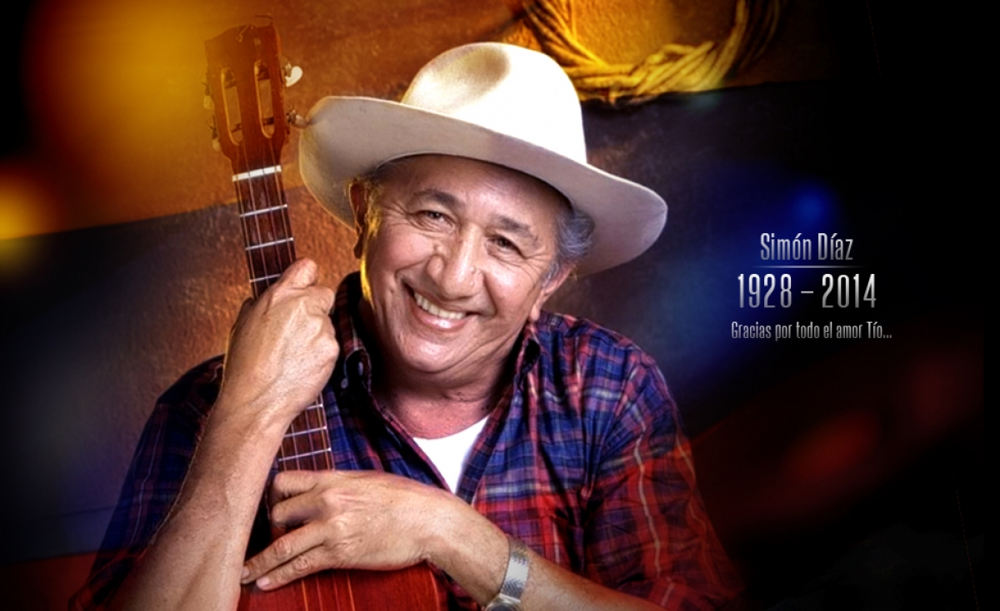

Su nombre Simón Narciso Márquez Díaz, más conocido por rescatar a la Tonada Llanera, grabó su primer álbum como cantante y compositor en 1963 y desde entonces ha grabado muchos otros. Simon Díaz tuvo una amplia carrera artística donde tuvo la oportunidad de grabar muchos discos (en su disco tiene más de 70 producciones musicales). Su trabajo es considerado uno de los legados más importantes tanto para la música folclórica venezolana como para el repertorio musical del resto del continente
Si quieres saber más sobre la vida de este famoso artista puedes hacer clic en el siguiente enlace